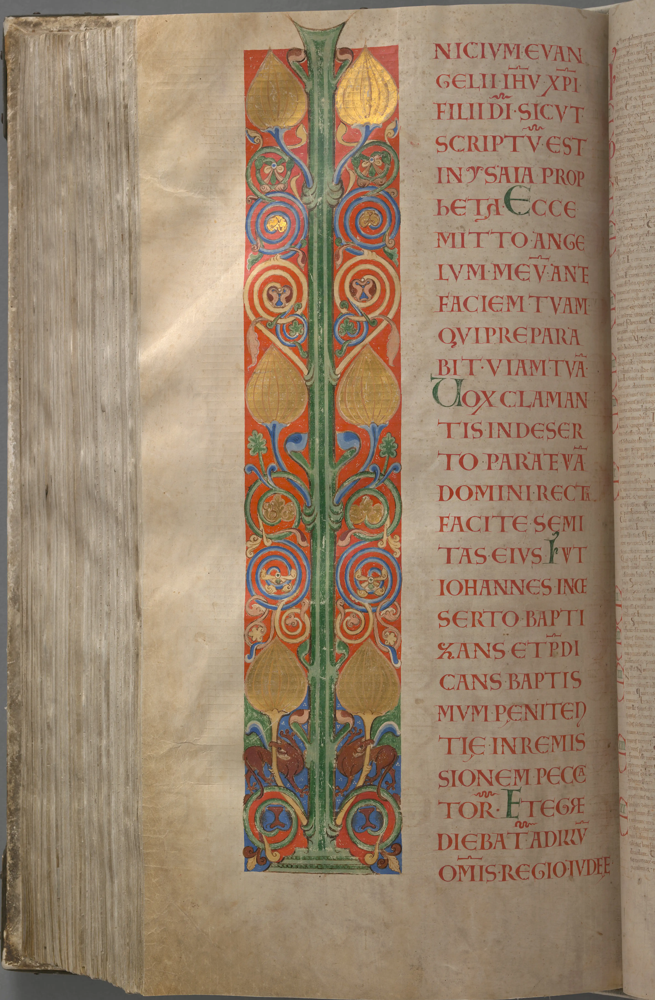

第1章

施洗約翰傳道（太3‧1－12；路3‧1－18；約1‧19－28）
1a神的兒子，耶穌基督福音的起頭。2a↖1a正如先知以賽亞（有古卷沒有以賽亞三個字）書上記著說：
「2b看哪，2c我要差遣我的使者在你前面，
2d↖2c預備你的道路。（單押x2，韻腳：你的、你的）
12a遷到巴比倫之後（九押x2，韻腳：被擄到巴比倫、被擄到巴比倫），耶哥尼雅生撒拉鐵；12b撒拉鐵生所羅巴伯；13a所羅巴伯生亞比玉；13b亞比玉生以利亞敬；13c以利亞敬生亞所；14a亞所生撒督（八押x2，韻腳：生亞所、生撒督）；14b撒督生亞金；14c亞金生以律；15a以律生以利亞撒；15b以利亞撒生馬但（雙押x2，韻腳：以利亞撒、馬但）；15c馬但生雅各；16a雅各生約瑟，就是馬利亞的丈夫。16b↖16a那稱為基督的耶穌是從馬利亞生的。
17a這樣，從亞伯拉罕到大衛共有十四代；17b從大衛到遷至巴比倫的時候也有十四代；17c從遷至巴比倫的時候到基督又有十四代。（七押x3，韻腳：十四代、十四代、十四代）
耶穌基督降生（路2‧1－7）
18a耶穌基督降生是這樣：18b↖18c他母親馬利亞已經許配了約瑟（雙押x2，韻腳：是這樣、約瑟），18c還沒有迎娶（字典：συνελθεῖν），馬利亞就從聖靈懷了孕。19a她丈夫約瑟是個義人，19b不願意明明地羞辱她，19c想要暗暗地把她休了。20a↖20b正思念這事的時候，20b看哪！有主的使者向他夢中顯現，說：（雙押x2，韻腳：思索、說）20c「大衛的子孫約瑟，20d不要怕！只管娶過（字典：παραλαβεῖν）你的妻子馬利亞來，20e因在（字典：ἐν）她所懷（字典：γεννηθὲν）的孕是從聖靈來的。（單押x2，韻腳：你的、聖）21a她將要生一個兒子，21b你要給他起名叫耶穌，21c因[他]要將自己的百姓從罪惡裏救出來。」22a這一切的事成就22b↖21a是要應驗主藉先知所說的話，23說：
「23a看哪！23b必有童女（字典：παρθένος）懷孕23c生子；
23d人要稱他的名為以馬內利。」
23e↖23d（以馬內利翻出來就是「神與我們同在」。）（化用典故：賽7‧14） 24a約瑟從睡夢中醒了，起來，24b↖24a就遵著主使者的吩咐的去作，24c就把妻子娶過來（字典：παρέλαβεν）；（單押x3，韻腳：睡夢、主、他的）25a只是沒有和她同房，25aA等她生了兒子（有古卷作25aB等他生了頭胎的兒子），25b就給他起名叫耶穌。